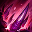

科加斯恐懼尖刺／饗宴成長
大絕 CD 80–60秒／8%→70–50秒／10%
7.2c 帶來 9 位英雄平衡調整，並重新調整鞋子與部分道具，同時強化元素飛龍與龍魂、移除 6:00 前巴龍路士兵互相攻擊的傷害減免；符文大亂鬥也有一批獨立英雄調整。
大絕 CD 80–60秒／8%→70–50秒／10%

54／12%→58／25%

35%／140%→28%／50%
生命 750／物防 55→690／50
Q 110%／E 40% AP→125%／50% AP

46／75–65秒→40／90–70秒

660 HP／40 物防→630／37

80–60秒／125–475→100–80秒／100–450

40–400／12–16／100–180→50–500／11–15／80–160
這裡直接整理 Riot 公告裡最重要的改動。每位英雄都附上頭像，方便你一眼看出本次到底改了誰；紅色向下代表削弱，綠色向上代表增強。
46→37
46／40／15%→37／36／10%

30–50%／20–40%→10–30%／10–25%
35–125 + 30%→40–130 + 33%
45–90／80–60秒→35–80／80–70秒
70%／2%→80%／3%

70–220／95–185→60–180／60–165
30%→18%

80–260／16–40%→100–280／20–50%

70–280／100–70秒→60–255／110–80秒
8/11 完成召喚峽谷英雄配置複查。本次不調整 Tier，針對 14 組英雄／路線的核心出裝、符文與召喚師技能進行校正，讓攻略方向更貼近目前 7.2b 實戰環境。
本次只更新上方 14 組英雄／路線；141 位英雄資料庫與其他分路配置皆維持原版，沒有進行額外 Tier 或版面調整。
本次 v87 僅校正攻略配置，沒有新增 Tier 升降；之後若英雄評級變動，仍會以「英雄頭像＋升降箭頭＋前後 Tier」方式直接顯示。
查看本站版本紀錄 →科加斯已於 8 月 7 日正式實裝。本站已依遊戲內資料補上正式技能數值與召喚峽谷定位；上市初期 Tier 暫定巴龍路 S、打野 S，完整出裝、符文與對局攻略待實戰資料成熟後補齊。

1 技破裂